Top view of the Z80DevBoard
A bridge between the golden age of 8-bit computing and modern embedded systems.
This documentation is designed for use in educational kits. Each chapter is self-contained and can be read independently, though following the order is recommended for beginners.
The document is structured in two layers: - Introductory sections at the start of each chapter, suitable for anyone with basic electronics curiosity - Technical deep-dives for those who want to understand every signal, register, and timing detail
The Z80DevBoard is an open-source single-board computer that pairs a Zilog Z80 CPU, one of the most iconic and revolutionary 8-bit processors ever built, with an RP2040 microcontroller, the modern dual-core chip designed by Raspberry Pi that powers most of the most modern projects.
The idea is simple: the Z80 operates as it would in its original environment, while the RP2040 handles all interaction between the developer and the board. The Z80 still runs real code, asserts real signal lines, and behaves exactly as it did in 1976, but the world it communicates with is managed by a modern chip running firmware that enables advanced features: loading programs over USB-C, serial communication, real-time RAM access, and the flexibility to deploy custom firmware for more complex projects.
This makes the Z80DevBoard both a retrocomputing gem and a powerful educational tool: you can study Z80 bus cycles firsthand, write and run real assembly code, and observe authentic hardware behavior, all without the complexity of building the surrounding support circuitry from scratch. Whether you are a student exploring how computers truly work at the lowest level, or an enthusiast who simply appreciates the elegance of classic 8-bit architecture, this board was built with you in mind.
The Zilog Z80 was developed in 1976 by Federico Faggin (the same engineer who designed the Intel 4004 and 8080). It later powered the ZX Spectrum, the MSX family, countless embedded systems, and even the Game Boy, which used a specially modified version of the Z80.
Despite being 50 years old, the Z80 remains an excellent architecture to study: - Its instruction set is rich yet regular, making it accessible. - Its bus protocol is well documented and easy to observe with a logic analyzer. - It has influenced virtually every modern CPU architecture, including x86 and ARM. - Writing Z80 assembly code teaches you exactly what a processor does, without layers of abstraction.
In short, the Z80 is a museum piece today, but its impact on the history of computing was profound, and its assembly language remains one of the best windows into the real workings of a CPU.
The RP2040 is a dual-core ARM Cortex-M0+ microcontroller developed by Raspberry Pi and released in 2021. Despite its low cost, it packs a number of features that make it exceptionally well suited for this project, most notably its Programmable I/O (PIO) subsystem: a set of small, deterministic state machines capable of handling GPIO pins with precision.
In the Z80DevBoard, the RP2040 takes on the role of the primary interface between the developer and the hardware: it stores the assembled program in flash, loads it into the onboard 64K asynchronous SRAM at boot, handles I/O bus cycles in real time, and exposes a USB serial interface for communication with the host computer. The expansion header additionally makes the board ready for more advanced use cases, from custom peripherals to deeper firmware experimentation.
The Z80DevBoard was designed with three goals in mind.
Every design decision is documented and explainable. There are no obscure components: every chip on the board exists for a clear, teachable reason. The Z80DevBoard was born as an educational tool first: the LED matrices and the serial connection with the RP2040 allow you to observe Z80 operations in real time, making it possible to learn, debug, and truly understand what your program is doing at every step. The board is designed to grow with the student: starting from basic Z80 assembly, which maps directly onto topics covered in computer architecture and systems courses, all the way up to writing custom RP2040 firmware for more complex, ambitious and independent projects.
The Z80 is not simulated. It receives a real clock, drives real address and data buses, and asserts real control signals. You can watch your code execute on a real processor, in real time and physically interact with it.
All KiCad design files are published under the CERN OHL S v2.0 license; the firmware source code and this documentation are published under the MIT License. Anyone can manufacture the board, modify it, or use it as a starting point for their own project, provided derivative works comply with the respective license terms. For students who want to go deeper, having access to the full sources, schematics, and documentation is itself a powerful learning resource.
The Z80DevBoard started from a simple desire: to learn Z80 assembly and truly understand how a CPU works. Existing emulators were not enough: while functionally accurate, they could never replicate the feeling of watching real code execute on real silicon. The goal became building a board that would make that possible: not just a personal learning tool, but something that could make the study of computer architecture more tangible, more immediate, and ultimately more rewarding for anyone who picks it up.
The Z80DevBoard lets you: - Run Z80 assembly programs loaded over USB from a host computer - Study computer architecture with a real, inspectable system rather than a textbook diagram - Observe bus activity in real time through the onboard LED matrices, watching every read, write, and control signal as it happens - Step through your program manually using the manual clock input, running the Z80 at your own pace, one cycle at a time if needed - Read and write RAM in real time via the serial connection with the RP2040, inspecting and modifying memory while the Z80 is running - Expand the board by connecting your own components to the expansion pin sockets, from simple peripherals to complete daughter boards - Write custom RP2040 firmware to implement advanced features, experiment with the bus protocol, or build projects that go well beyond a standard development board
The Z80DevBoard is a 4-layer PCB measuring 219 × 108.5 mm, designed around two central processing units: the Z84C00 (Z80) and the RP2040. The board operates at 5V via USB-C, with an onboard AMS1117-3.3 regulator supplying the 3.3V rail to the RP2040 and the supporting logic.
The Z80 is the execution core: it runs assembly programs stored in the two onboard HM62256BLP SRAM chips, which together provide 64 KB of addressable memory.
The RP2040 acts as the interface layer between the developer and the board: it reads the compiled program from the W25Q32JVSS flash memory and loads it into SRAM before releasing the Z80.
The data bus is managed by a set of SN74LVC245APW bus transceivers, which handle the voltage difference between the Z80’s 5V logic and the RP2040’s 3.3V logic.
Three 74HC595 shift registers allow the RP2040 to drive the bus over a serial interface, while the 74HC165 reads it back. A dedicated oscillator drives the Z80 clock, selectable between manual and automatic mode via an onboard switch; the RP2040 runs off a 12 MHz crystal.
Forty LEDs, organized in matrices and driven by 74HCT574 buffers, provide real-time visual feedback of Z80 bus activity.
Two expansion connectors expose additional signals for daughter boards and custom projects.
The Z80 is an 8-bit microprocessor designed by Zilog and first introduced in 1976. Despite its age, it remains one of the most studied and documented CPU architectures ever produced, and its influence can still be traced in modern instruction set designs.
The specific model used on the Z80DevBoard is the Z84C00: the CMOS variant of the original Z80. Compared to the original NMOS version, the Z84C00 offers several practical advantages: significantly lower power consumption, full static operation (meaning the clock can be slowed down to DC without losing register contents), and better noise immunity thanks to the wider logic voltage margins typical of CMOS technology. It is also considerably easier to source today than original NMOS parts.
The Z84C00 operates with a 5V supply and communicates with the rest of the board through three buses: a 16-bit address bus, an 8-bit bidirectional data bus, and a set of control signals that coordinate every memory and I/O operation. With 16 address lines, the CPU can directly address up to 64 KB of memory: exactly the amount provided by the onboard SRAM.
The RP2040 is a dual-core ARM Cortex-M0+ microcontroller developed by Raspberry Pi and released in 2021. It runs at up to 133MHz, integrates 264KB of SRAM, and includes a rich set of peripherals, among which the most relevant is the Programmable I/O (PIO): a set of small, deterministic state machines capable of handling GPIO pins with cycle-accurate timing.
On the Z80DevBoard, the RP2040 serves as the primary interface between the developer and the hardware. At boot, it reads the compiled Z80 program from the onboard flash memory and transfers it into SRAM, where the Z80 will execute it. During execution, it monitors the Z80 control signals in real time, handles I/O bus cycles, and maintains the serial connection with the host computer over USB.
The RP2040 runs at 3.3V, while the Z80 operates at 5V. All signals exchanged between the two pass through level shifters and bus transceivers that handle the voltage difference transparently. Communication with the shift registers, used to extend the RP2040’s effective GPIO count, happens over a fast serial interface, keeping the pin usage manageable without sacrificing bus performance.
The RP2040 also exposes its SWD debug interface on dedicated pins, allowing firmware to be developed and debugged with standard tools such as a Raspberry Pi Debug Probe or any compatible SWD adapter.
The Z80DevBoard mount two HM62256BLP chips as its main memory: a classic 32KB × 8-bit Asynchronous Static RAM. Mounted in parallel, the two chips provide a combined address space of 64KB, which is the maximum the Z80 can directly address with its 16-bit address bus.
Unlike Dynamic RAM (DRAM), Static RAM does not
require periodic refresh cycles to retain its contents. This
simplifies the board design considerably: there is
no need for a dedicated refresh controller, and the
Z80’s /RFSH pin, which would normally trigger DRAM
refresh, is simply left unused. As long as the
board is powered, the memory contents remain intact.
The HM62256BLP is an asynchronous device,
meaning it does not rely on a shared clock signal to
coordinate read and write operations. Instead, timing is governed
entirely by the Z80’s control signals: /MREQ,
/RD, and /WR, which the SRAM monitors
directly. A read cycle completes as soon as the
address has been stable for the chip’s access time; a
write cycle latches the data on the rising edge
of /WR.
At boot, the RP2040 takes control of the bus and writes the compiled Z80 program into SRAM before releasing the CPU from reset. From that point on, the Z80 reads instructions and data, and writes results back, to these two chips for the entire duration of program execution.
The W25Q32JVSS is a 32Mbit (4MB) SPI NOR flash memory chip, used on the Z80DevBoard as persistent storage for the RP2040 firmware and the Z80 program. Unlike SRAM, flash memory retains its contents when the board is powered off, making it the natural choice for storing code that needs to survive between sessions.
The RP2040 communicates with the flash chip over a dedicated SPI bus. At boot, it reads the compiled Z80 program from flash and transfers it into SRAM before releasing the Z80 from reset. The RP2040’s own firmware is also stored on the same chip, following the standard Raspberry Pi Pico architecture where the RP2040 boots directly from an external SPI flash.
From the Z80’s perspective, the flash memory is completely invisible: the CPU only ever interacts with the SRAM. The flash is exclusively managed by the RP2040, which handles all read and write operations transparently in the background.
The Z80DevBoard features 40 LEDs organized in matrices, one of the most distinctive and educationally valuable aspects of the board. Each LED reflects the real-time state of a specific signal or data line, giving an immediate visual representation of what the Z80 is doing at any given moment, without the need for an oscilloscope or a logic analyzer.
The LEDs are driven by 74HCT574 octal D-type flip-flop buffers, which latch the current state of the bus. Without buffering, the signals on a running Z80 bus change far too rapidly to be perceived directly, at even a modest clock frequency, individual bus cycles last only a few hundred nanoseconds. The buffers solve this by capturing a snapshot of the bus state and holding it stable until the next update.
This is where the manual clock mode becomes particularly powerful: by stepping through the program one clock cycle at a time, the LEDs update with each step, allowing you to follow the execution of every instruction in real time and observe exactly how the Z80 reads from and writes to memory. Combined with the serial connection to the RP2040, this makes the Z80DevBoard a genuinely transparent system: one where the internal state of the CPU is always visible and never hidden.
The Z80DevBoard exposes two expansion connectors designed to make the board the foundation of a larger system, rather than a closed, self-contained unit.
The first is a 2×20 pin connector that breaks out all 40 pins of the Z80: address bus, data bus, and control signals; giving direct access to the full CPU interface. This connector is intended for daughter boards that extend the Z80’s environment: additional memory, custom peripherals, or any hardware that needs to interact directly with the Z80 bus.
The second is a 2×10 pin connector that exposes a selection of RP2040 signals: the 3.3V and GND power rails, the two ADC inputs (ADC0 and ADC1), and GPIO10 through GPIO25. This connector is oriented towards more advanced projects where the RP2040 itself needs to interact with external hardware: sensors, displays, communication modules, or custom firmware experiments that go beyond the standard board functionality.
Together, the two connectors cover both sides of the system: the Z80’s classic parallel bus interface and the RP2040’s modern programmable I/O, making it possible to build virtually any extension imaginable on top of the Z80DevBoard.
The board is powered and connected to the host computer through a single USB-C 2.0 connector. It serves two distinct purposes simultaneously: delivering the 5V supply voltage to the board, and providing a full-speed USB data connection to the RP2040.
On the power side, the 5V rail feeds the Z80 directly and passes through the onboard AMS1117-3.3 regulator to generate the 3.3V rail for the RP2040 and the supporting logic. A 500mA fuse protects the board from overcurrent conditions.
On the data side, the RP2040 enumerates as a USB CDC (Communications Device Class) serial device, appearing as a virtual COM port on the host computer. This connection is used to upload compiled Z80 programs to the board, interact with the RP2040 firmware, and read any output the Z80 program produces at runtime. No special driver is required on Linux or macOS; on Windows, the board appears as a standard COM port in Device Manager.
The choice of USB-C makes the board compatible with modern laptops and workstations without the need for adapters, while keeping the connector robust enough for repeated use in an educational environment.
The center of the board is the Z80, connected to the two SRAM chips through its full 16-bit address bus and 8-bit data bus. Every memory access the Z80 performs (fetching an instruction, reading a variable, writing a result) travels directly across these buses to and from the SRAM.
The RP2040 sits alongside the Z80, connected to the
same data and control buses through a set of SN74LVC245APW bus
transceivers and 74HC595 - 74HC165 shift registers.
The transceivers handle the voltage difference between
the Z80’s 5V logic and the RP2040’s 3.3V logic, while the shift
registers allow the RP2040 to read and drive the bus over a
compact serial interface, keeping GPIO usage under control. A
TXS0104EPW level shifter handles the BUSREQ and
BUSACK signals specifically, which coordinate bus ownership
between the two chips.
The W25Q32JVSS flash memory is connected exclusively to the RP2040 over SPI. The Z80 has no direct access to it, the flash is managed only by the RP2040, which uses it to store firmware and the Z80 program persistently between sessions.
The LED matrices, driven by 74HCT574 buffers, display the state of data and address buses in real time. The buffers stay between the bus and the LEDs, ensuring that the display logic never interferes with bus timing.
The USB-C connector provides 5V to the board and connects it directly to the RP2040’s USB pins, establishing the serial link with the host computer. The AMS1117-3.3 regulator is positioned between the 5V input and the 3.3V rail, supplying the RP2040 and all the 3.3V logic on the board.
Finally, the two expansion connectors provide the Z80 bus and the RP2040 GPIO pins, making every relevant signal accessible to external hardware without interfering with the rest of the board.
The board is laid out on a 4-layer PCB. The front copper layer (F.Cu) and the back copper layer (B.Cu) are used for the general signal routing. The inner layer In1.Cu is dedicated to the power distribution network, carrying both the 5V and 3.3V rails across the board. The inner layer In2.Cu is a solid ground plane, providing a clean reference for all signals and reducing electromagnetic interference.
The Z84C00 is available in a 40-pin DIP package. The pinout below reflects the official Zilog datasheet.
┌───────────────────┐
A11 ⬅ │ 1 40 │ ⮕ A10
A12 ⬅ │ 2 Z80 39 │ ⮕ A9
A13 ⬅ │ 3 38 │ ⮕ A8
A14 ⬅ │ 4 37 │ ⮕ A7
A15 ⬅ │ 5 36 │ ⮕ A6
CLK ⮕ │ 6 35 │ ⮕ A5
D4 ⬌ │ 7 34 │ ⮕ A4
D3 ⬌ │ 8 33 │ ⮕ A3
D5 ⬌ │ 9 32 │ ⮕ A2
D6 ⬌ │ 10 31 │ ⮕ A1
Vcc ⮕ │ 11 30 │ ⮕ A0
D2 ⬌ │ 12 29 │ ⬅ GND
D7 ⬌ │ 13 28 │ ⮕ /RFSH
D0 ⬌ │ 14 27 │ ⮕ /M1
D1 ⬌ │ 15 26 │ ⬅ /RESET
/INT ⮕ │ 16 25 │ ⬅ /BUSRQ
/NMI ⮕ │ 17 24 │ ⬅ /WAIT
/HALT ⬅ │ 18 23 │ ⮕ /BUSACK
/MREQ ⬅ │ 19 22 │ ⮕ /WR
/IORQ ⬅ │ 20 21 │ ⮕ /RD
└───────────────────┘| Symbol | Pin | Direction | Description |
|---|---|---|---|
| A0–A15 | 30-40, 1–5 | Output | 16-bit address bus |
| D0–D7 | 14, 15, 12, 8, 7, 9, 10, 13 | Bidirectional | 8-bit data bus |
| CLK | 6 | Input | System clock |
| /MREQ | 19 | Output | Memory request (active low) |
| /IORQ | 20 | Output | I/O request (active low) |
| /RD | 21 | Output | Read operation indicator (active low) |
| /WR | 22 | Output | Write operation indicator (active low) |
| /M1 | 27 | Output | With /MREQ indicates opcode fetch cycle, with /IORQ indicates interrupt acknowledge cycle (active low) |
| /RFSH | 28 | Output | DRAM refresh cycle (active low) |
| /HALT | 18 | Output | CPU halted (active low) |
| /WAIT | 24 | Input | Insert wait states (active low) |
| /INT | 16 | Input | Maskable interrupt request (active low) |
| /NMI | 17 | Input | Non-maskable interrupt request (active low) |
| /RESET | 26 | Input | Reset (active low) |
| /BUSRQ | 25 | Input | Bus request (active low) |
| /BUSACK | 23 | Output | Bus acknowledge (active low) |
| Vcc | 11 | Power | +5V supply |
| GND | 29 | Power | Ground |
The RP2040 is available in a 56-pin QFN package. The pinout below reflects the official Raspberry Pi datasheet.
QSPI_SS_N QSPI_SD1 QSPI_SD2 QSPI_SD0 QSPI_SCLK QSPI_SD3 DVDD IOVDD USB_VDD USB_DP USB_DM VREG_VIN VREG_VOUT ADC_AVDD
┌───────────────────────────────────────────────┐
│ 56 55 54 53 52 51 50 49 48 47 46 45 44 43 │
│ │
IOVDD │ 1 42 │ IOVDD
GPIO0 │ 2 41 │ GPIO29/ADC3
GPIO1 │ 3 40 │ GPIO28/ADC2
GPIO2 │ 4 39 │ GPIO27/ADC1
GPIO3 │ 5 ┌───────────┐ 38 │ GPIO26/ADC0
GPIO4 │ 6 │ │ 37 │ GPIO25
GPIO5 │ 7 │ GND │ 36 │ GPIO24
GPIO6 │ 8 │ │ 35 │ GPIO23
GPIO7 │ 9 └───────────┘ 34 │ GPIO22
IOVDD │ 10 33 │ IOVDD
GPIO8 │ 11 32 │ GPIO21
GPIO9 │ 12 31 │ GPIO20
GPIO10 │ 13 30 │ GPIO19
GPIO11 │ 14 29 │ GPIO18
│ │
│ 15 16 17 18 19 20 21 22 23 24 25 26 27 28 │
└───────────────────────────────────────────────┘
GPIO12 GPIO13 GPIO14 GPIO15 TESTEN XIN XOUT IOVDD DVDD SWCLK SWDIO RUN GPIO16 GPIO17| Symbol | Pin | Direction | Description |
|---|---|---|---|
| GPIO0–GPIO25 | 2-9, 11-18, 27-32, 34-37 | Configurable | General purpose I/O |
| GPIO26/ADC0 | 38 | Configurable | GPIO or ADC (Analog to Digital Converter) channel 0 |
| GPIO27/ADC1 | 39 | Configurable | GPIO or ADC (Analog to Digital Converter) channel 1 |
| GPIO28/ADC2 | 40 | Configurable | GPIO or ADC (Analog to Digital Converter) channel 2 |
| GPIO29/ADC3 | 41 | Configurable | GPIO or ADC (Analog to Digital Converter) channel 3 |
| XIN | 20 | Input | Crystal oscillator input (12 MHz) |
| XOUT | 21 | Output | Crystal oscillator output |
| USB_DP | 47 | Bidirectional | USB D+ (27Ω resistor required) |
| USB_DM | 46 | Bidirectional | USB D− (27Ω resistor required) |
| SWCLK | 24 | Input | SWD clock (debug) |
| SWDIO | 25 | Bidirectional | SWD data (debug) |
| RUN | 26 | Input | Reset (active low) |
| VREG_VIN | 45 | Power | Voltage regulator input (1.8V to 3.3V) (1uF capacitor required) |
| VREG_VOUT | 44 | Power | Voltage regulator output (1.1V core) (1uF capacitor required) |
| IOVDD | 1, 10, 22, 33, 42, 49 | Power | GPIO supply (1.8V to 3.3V) |
| DVDD | 23, 50 | Power | Digital core supply (1.1V) |
| ADC_AVDD | 43 | Power | ADC analog supply (3.3V) |
| USB_VDD | 48 | Power | USB PHY supply (3.3V) |
| GND | Center Pad | Power | Ground |
| QSPI_* | 51–56 | Bidirectional | Interface to a SPI flash (Usable also as GPIO) |
The Expansion Connector (Z80 Bus) is a 2×20 pin connector located on the bottom-right of the Z80DevBoard. It exposes all Z80 bus signals, providing direct access to the CPU interface for daughter boards and external hardware.
D0 D2 D4 D6 HALT RST BREQ INT M1 IORQ A0 A2 A4 A6 A8 A10 A12 A14 WR Vcc
1 3 5 7 9 11 13 15 17 19 21 23 25 27 29 31 33 35 37 39
┌────────────────────────────────────────────────────────────┐
│ ● ● ● ● ● ● ● ● ● ● ● ● ● ● ● ● ● ● ● ● │
│ ● ● ● ● ● ● ● ● ● ● ● ● ● ● ● ● ● ● ● ● │
└────────────────────────────────────────────────────────────┘
2 4 6 8 10 12 14 16 18 20 22 24 26 28 30 32 34 36 38 40
D1 D3 D5 D7 WAIT CLK BACK NMI RFSH MREQ A1 A3 A5 A7 A9 A11 A13 A15 RD GND| Symbol | Pin | Direction | Description |
|---|---|---|---|
| D0–D7 | 1-8 | Bidirectional | 8-bit data bus |
| HALT | 9 | Output | CPU halted (active low) |
| WAIT | 10 | Input | Insert wait states (active low) |
| RST | 11 | Input | Reset (active low) |
| CLK | 12 | Input | System clock |
| BREQ | 13 | Input | Bus request (active low) |
| BACK | 14 | Output | Bus acknowledge (active low) |
| INT | 15 | Input | Maskable interrupt request (active low) |
| NMI | 16 | Input | Non-maskable interrupt request (active low) |
| M1 | 17 | Output | With MREQ indicates opcode fetch cycle, with IORQ indicates interrupt acknowledge cycle (active low) |
| RFSH | 18 | Output | DRAM refresh cycle (active low) |
| IORQ | 19 | Output | I/O request (active low) |
| MREQ | 20 | Output | Memory request (active low) |
| A0–A15 | 21-36 | Output | 16-bit address bus |
| WR | 37 | Output | Write operation indicator (active low) |
| RD | 38 | Output | Read operation indicator (active low) |
| Vcc | 39 | Power | +5V supply |
| GND | 40 | Power | Ground |
The Expansion Connector (RP2040) is a 2×10 pin connector located on the bottom-right of the Z80DevBoard. It exposes GPIO pins 10 through 25, two ADC pins, and the 3v3 power rail, allowing the development of more advanced projects on expansion boards with custom firmware.
GPIO10 GPIO12 GPIO14 GPIO16 GPIO18 GPIO20 GPIO22 GPIO24 ADC0 3v3
1 3 5 7 9 11 13 15 17 19
┌──────────────────────────────┐
│ ● ● ● ● ● ● ● ● ● ● │
│ ● ● ● ● ● ● ● ● ● ● │
└──────────────────────────────┘
2 4 6 8 10 12 14 16 18 20
GPIO11 GPIO13 GPIO15 GPIO17 GPIO19 GPIO21 GPIO23 GPIO25 ADC1 GND| Symbol | Pin | Direction | Description |
|---|---|---|---|
| GPIO10-GPIO25 | 1-16 | Configurable | General purpose I/O |
| ADC0-ADC1 | 17-18 | Configurable | GPIO or ADC (Analog to Digital Converter) channel 0 and 1 |
| 3v3 | 19 | Power | +3.3V supply |
| GND | 20 | Power | Ground |
The SWD (Serial Wire Debug) interface is exposed through two dedicated pins located in the top-right corner of the Z80DevBoard. It provides a direct connection to the RP2040’s debug port, allowing firmware to be flashed and debugged using any SWD-compatible adapter, such as a Raspberry Pi Debug Probe.
SWCLK
1
┌───┐
│ ● │
│ ● │
└───┘
2
SWD| Symbol | Pin | Direction | Description |
|---|---|---|---|
| SWCLK | 1 | Input | SWD clock (debug) |
| SWD | 2 | Bidirectional | SWD data (debug) |
A ground reference is available on the GND pins of the Expansion connector.
Before getting started, make sure you have the following: - A fully assembled Z80DevBoard - A USB-C cable (data-capable, not charge-only) - A computer running Linux, Windows or macOS - A Z80 assembler - z80asm is recommended - A serial terminal - such as PuTTY (Windows), screen or minicom (Linux/macOS)
Connect the USB-C cable between the board and your computer. The LEDs light up immediately, confirming the board is receiving power.
The RP2040 initialises, requests the bus via BUSREQ, holds it while loading the program from flash into SRAM. Once ready, the Z80 is released and begins executing.
To load a program onto the Z80DevBoard: 1. Hold the Z80BOOT button while connecting the board to your computer through the USB-C port. 2. The RP2040 will expose a 32KB mass storage device on your computer: it will look like a USB drive. 3. Copy your assembled Z80 binary onto the drive. 4. The RP2040 will reset automatically, load the program from flash into SRAM, and the board will be ready for execution.
The program must be a raw Z80 binary, not an Intel HEX file or any other format.
Make sure to assemble your code before loading it onto the board.
Once a program has been loaded, the Z80 begins executing
automatically from address 0x0000. From this point, the
board runs autonomously. The RP2040 manages the bus in the background
while the Z80 fetches instructions from SRAM and executes them in
sequence.
The LED matrices will immediately reflect the activity on the address and data buses, updating in real time with every memory access.
The Z80RESET button restarts execution from
0x0000 without reloading the program,
making it useful for quick re-runs during
development.
The Z80WAIT button stops the execution without reloading the program, making it useful for quick debug during development.
An onboard switch allows toggling between automatic clock mode and manual clock mode: - In automatic mode, the Z80 runs at a fixed low frequency generated by an onboard capacitors system. - In manual mode, each press of the Z80CLOCK button advances the clock by one cycle, allowing you to step through your program one clock pulse at a time.
For examples and a complete guide to writing Z80 assembly programs, refer to Chapter 6 - Z80 Assembly Programming.
The manual clock mode is one of the most powerful educational features of the Z80DevBoard.
By stepping through the program one clock cycle at a time, you can observe exactly what the Z80 is doing at every stage of execution: which address it is reading, what data is on the bus, and which control signals are active.
To use the manual clock: - Flip the onboard switch to manual
clock mode (represented on the board by the label
Manual). - (Optional) Press Z80RESET to
restart execution from 0x0000. - Press Z80CLOCK to
advance the clock by one cycle. - Observe the
LED matrices after each press: the address bus, data bus, and
control signals will update with every cycle.
Combined with the LED matrices, manual clock mode turns the Z80DevBoard into a fully transparent system: every internal state of the CPU becomes visible and inspectable, one step at a time.
The Z80DevBoard features 40 LEDs organized in matrices that display the real-time state of the Z80 buses. Each LED corresponds to a specific signal line.
When the LED is on, the line is HIGH; when it is off, the line is LOW.
The matrices are organized as follows:
| Matrix | Signals | Description |
|---|---|---|
| Address Bus | A0–A15 | The 16-bit memory address the Z80 is currently accessing. |
| Data Bus (WRITING) | D0–D7 | The 8-bit value being written. |
| Data Bus (READING) | D0–D7 | The 8-bit value being read. |
| HALT | HALT | The CPU has executed a HALT instruction. |
| MREQ | MREQ | The Z80 is performing a memory access. |
| IORQ | IORQ | The Z80 is performing an I/O port access. |
| RFSH | RFSH | The Z80 is performing a DRAM refresh cycle. |
| M1 | M1 | The Z80 is fetching an opcode (with MREQ) or acknowledging an interrupt (with IORQ). |
| BUSACK | BUSACK | The Z80 has released the bus in response to a BUSREQ. |
| WRITE | WR | The Z80 is writing data to memory or an I/O port. |
| READ | RD | The Z80 is reading data from memory or an I/O port. |
The LEDs are most readable in manual clock mode: since the bus changes faster than the human eye can follow at normal clock speeds, stepping one cycle at a time allows you to read each matrix clearly after every press of Z80CLOCK.
In automatic clock mode, the low frequency of the onboard oscillator still makes the matrices partially readable, giving a general sense of program activity even without stepping manually.
To flash a new firmware onto the RP2040: 1. Hold the RP2040BOOT button while connecting the board to your computer through the USB-C port. 2. The RP2040 will expose a mass storage device on your computer: it will appear as a USB drive. 3. Copy your compiled UF2 firmware file onto the drive. 4. The RP2040 will reset automatically and boot with the new firmware.
The latest official firmware for the Z80DevBoard is available in the firmware folder of the repository.
The RP2040 exposes a USB CDC (Communications Device Class) serial interface over the USB-C connector, which appears as a virtual COM port on the host computer. This interface allows sending commands to the board and receiving output in real time, without any additional hardware.
To connect, open a serial terminal at 115200 baud, 8N1 (8 bit of data for each byte, No parity, 1 bit of stop) on the port assigned to the board by your operating system.
read <addrstart> [addrend]
Reads one or more bytes from RAM and returns them as space-separated hexadecimal values.
read 0x0000 -> FF
read 0x0000 0x0004 -> FF A1 00 33 00write <addr> <value>
Writes a single byte to the specified RAM address. Returns the value read back from that address after the write: if it matches the value sent, the write was successful.
write 0x0FFF FF -> FFIf the readback differs from the written value, it indicates that an issue happened while writing that memory cell.
All commands return an error message prefixed with ERROR: if the input is malformed:
read -> ERROR: missing address
read 0xGGGG -> ERROR: invalid address '0xGGGG'
write 0x0000 -> ERROR: missing value
unknowncmd -> ERROR: unknown command 'unknowncmd'The Z80DevBoard’s official firmware is open source and built with the Raspberry Pi Pico SDK, written in C. This section covers how to set up a development environment, build firmware from source, and extend it with your own functionality.
You will need: - CMake (3.13 or later) - GCC ARM toolchain (arm-none-eabi-gcc) - Pico SDK (cloned from the official Raspberry Pi repository) - Git
Clone the Z80DevBoard repository and move in the project’s folder:
git clone https://github.com/gianluca-rainis/Z80DevBoard.git
cd Z80DevBoardsudo apt update
sudo apt install cmake gcc-arm-none-eabi libnewlib-arm-none-eabi build-essential git
cd firmware
git clone -b master https://github.com/raspberrypi/pico-sdk.git
cd pico-sdk
git submodule update --init
export PICO_SDK_PATH=$(pwd)brew install cmake arm-none-eabi-gcc git
cd firmware
git clone -b master https://github.com/raspberrypi/pico-sdk.git
cd pico-sdk
git submodule update --init
export PICO_SDK_PATH=$(pwd)The simplest approach is to use the official Raspberry Pi Pico Setup Windows installer, which configures CMake, the ARM toolchain, and the Pico SDK automatically. Alternatively, install the prerequisites manually via MSYS2 or the ARM GNU Toolchain installer, then clone the Pico SDK as shown above.
On all platforms, make sure the PICO_SDK_PATH
environment variable points to your Pico SDK directory, this is required
by the build system.
Build the firmware repository with CMake:
mkdir build
cmake --build build --parallelIf the build succeeds, a .uf2 file will be produced in
the build/ directory, this is the file you flash onto the
board.
Custom firmware is flashed the same way as official releases, using
the RP2040BOOT button described in section 5.1 Flashing the
Firmware: 1. Hold RP2040BOOT while connecting the board via
USB-C. 2. The RP2040 exposes itself as a mass storage device. 3. Copy
your compiled .uf2 file onto the drive. 4. The board resets
automatically and boots into your custom firmware.
Always keep a copy of the latest official
.uf2firmware on hand, so you can restore the board to its default behavior if your custom firmware doesn’t work as expected.
Remember that you can always use the SWD and SWCLK pins on the board to live debug your firmware.
The UART command parser, implemented in uart.c,
dispatches incoming commands by comparing the first word of the input
line. Adding a new command means adding a new branch to this dispatch
logic and writing a handler function for it.
As an example, here’s how to add a version command that
reports the firmware version:
// In uart.c
#define FIRMWARE_VERSION "1.0.0"
// Handle command: version
static void cmdVersion(char *args) {
printf("Z80DevBoard firmware v%s\n", FIRMWARE_VERSION);
}
// Dispatch a command string to the appropriate handler.
void uartProcessCommand(const char *cmd) {
// ... existing code ...
if (strcmp(verb, "read") == 0) {
cmdRead(args);
}
else if (strcmp(verb, "write") == 0) {
cmdWrite(args);
}
else if (strcmp(verb, "version") == 0) {
cmdVersion(args);
}
else {
printf("ERROR: unknown command '%s'\n", verb);
}
}Any handler function follows the same pattern: it receives the
remainder of the command line as a string (args), parses
whatever parameters it needs, performs its operation, and writes a
response using printf.
The expansion pins exposed on the 2×10 connector
(GPIO10-GPIO25, ADC0, ADC1) are
defined in firmware.h but left uninitialised by default,
since their use depends entirely on your project.
To use them, uncomment and adapt the relevant gpio_init
calls in setup():
gpio_init(GPIO_EXPANSION_1);
gpio_set_dir(GPIO_EXPANSION_1, GPIO_OUT);For analog input via the ADC-capable pins, initialise the RP2040 ADC peripheral instead of treating the pin as a digital GPIO:
#include "hardware/adc.h"
adc_init();
adc_gpio_init(GPIO_EXPANSION_ADC0);
adc_select_input(0);
uint16_t result = adc_read();Once initialised, you can read or drive these pins anywhere in your
firmware: inside loop(), inside a UART command handler, or
inside an interrupt handler if you configure one.
Any custom firmware that interacts with the Z80 bus (reading or
writing SRAM, monitoring control signals) must respect the bus
arbitration protocol. Always call sendBusReqAndWaitBusAck()
before accessing the bus directly, and releaseBusReq() once
finished, to avoid bus contention with the Z80.
The Z80DevBoard exposes two expansion connectors described in detail in Chapter 3 - Pinout & Connectors. Both are dual-row SMD female connectors with 1.27 mm pitch.
To use a third-part or community-designed expansion board, check that it has matching dual-row 1.27 mm pitch male pin headers on its underside and that it is designed for the Z80DevBoard pinout. Plug it directly into the connectors. No soldering required.
Before powering on, verify the following: - Check the voltage levels of the expansion board. Signals on the 2×20 connector are at 5V (Z80 bus), while signals on the 2×10 connector are at 3.3V (RP2040 GPIO). Make sure the expansion board is designed for the correct voltage on each connector, and use a level shifter if interfacing between the two. - Check the expansion board’s power requirements. The 5V pin (pin 39 on the 2×20) and the 3.3V pin (pin 19 on the 2×10) can supply power, but the 3.3V rail is limited by the RP2040’s onboard LDO. Power-hungry boards should be supplied independently. - The ADC pins are analog inputs. Do not exceed 3.3V on these pins. - If the expansion board requires custom RP2040 firmware, refer to section 5.3 Writing Custom RP2040 Firmware and flash it before use.
Designing an expansion board for the Z80DevBoard requires attention to both mechanical and electrical compatibility.
The two expansion connectors on the Z80DevBoard are dual-row SMD female connectors with 1.27 mm pitch. Your expansion board must use matching dual-row 1.27 mm pitch male pin headers on its underside, aligned to the Z80DevBoard pinout as described in Chapter 3 - Pinout & Connectors. When designing the PCB, make sure the connector footprints are placed on the bottom layer of the expansion board, so that the board sits flat on top of the Z80DevBoard when plugged in.
Signals on the 2×20 connector are at 5V (Z80 bus). Design any circuit connected to these pins for 5V logic, or add a level shifter if interfacing with 3.3V components.
Signals on the 2×10 connector are at 3.3V (RP2040 GPIO). Do not exceed 3.3V on any of these pins.
The ADC pins (ADC0, ADC1) are analog inputs with a maximum of 3.3V. Keep analog signals clean and away from noisy digital traces on your PCB. If your board requires more power than the onboard rails can provide, add an independent power input rather than relying on the Z80DevBoard’s LDO.
The Z80DevBoard is designed in KiCad, and using the same tool for your expansion board ensures full compatibility.
The connector footprints to use are standard 2×20 and 2×10 male pin headers with 1.27 mm pitch: these are available in the KiCad standard library.
To verify alignment, import the Z80DevBoard PCB as a reference layer in your KiCad project and check that the connector positions match before ordering.
If your expansion board uses GPIO pins from the 2×10 connector, those
pins must be initialised in the RP2040 firmware. The expansion GPIO
definitions are already present in firmware.h:
#define GPIO_EXPANSION_1 12
#define GPIO_EXPANSION_2 13
// ...
#define GPIO_EXPANSION_ADC1 27
#define GPIO_EXPANSION_ADC2 28
#define GPIO_EXPANSION_ADC3 29Uncomment the corresponding gpio_init
and gpio_set_dir calls in setup(), then add
your logic to loop() or dedicated handler functions. Refer
to section 5.3
Writing Custom RP2040 Firmware for further guidance.
The Z80DevBoard exposes the RP2040’s SWD (Serial Wire Debug) interface through two dedicated pins located in the top-right corner of the board, as described in Chapter 3 - Pinout & Connectors.
SWD allows full debugging of the RP2040 firmware: setting breakpoints, stepping through code, inspecting memory and registers, and flashing new firmware: all without pressing the RP2040BOOT button.
Connect the debug probe to the two SWD pins on the board:
| SWD Pin | Signal |
|---|---|
| 1 | SWCLK |
| 2 | SWDIO |
Use a GND reference from the nearest GND pin on the expansion connector.
A basic OpenOCD configuration for the RP2040:
sudo openocd -f interface/cmsis-dap.cfg -f target/rp2040.cfgOnce connected, you can attach GDB:
gdb firmware/build/Z80DevBoard.elf
(gdb) target remote localhost:3333
(gdb) monitor reset init
(gdb) continueFor a more comfortable experience, use the Cortex-Debug extension in VS Code, which wraps OpenOCD and GDB in a graphical interface with breakpoints, variable inspection, and call stack view.
Assembly language is the human-readable form of a processor’s machine code. Each line corresponds directly to one instruction the CPU executes, without compiler; runtime; or framework between you and the hardware.
Writing Z80 assembly means writing exactly what the processor will do, one operation at a time: load a value into a register, add two numbers, jump to a different part of the program. There is no abstraction, no hidden behavior, and no overhead.
What you write is what runs.
This directness is what makes assembly both challenging and deeply educational. Understanding Z80 assembly means understanding how any CPU works at its most fundamental level: how instructions are fetched and decoded, how memory is addressed, how control flow is implemented in hardware.
These concepts underlie every programming language and every processor architecture in use today. The Z80 is one of the best architectures to learn assembly on: its instruction set is rich but regular, its documentation is thorough, and its behavior is entirely predictable.
Once you understand the Z80, the principles transfer directly to other architectures.
The Z80 CPU contains 208 bits of read/write memory, configured as eighteen 8-bit registers and four 16-bit registers. There are two sets of six general-purpose registers, two sets of Accumulator and Flag registers, and six special-purpose registers.
| Accumulator | Flags |
|---|---|
| A | F |
| B | C |
| D | E |
| H | L |
| Accumulator | Flags |
|---|---|
| A’ | F’ |
| B’ | C’ |
| D’ | E’ |
| H’ | L’ |
| Use | Register |
|---|---|
| Interrupt Vector | I |
| Memory Refresh | R |
| Index Register | IX |
| Index Register | IY |
| Stack Pointer | SP |
| Program Counter | PC |
The Flag Registers (F and F’) are two 8-bit registers automatically updated by the CPU after arithmetic and logic operations. Each bit represents a specific condition, used by conditional instructions to decide whether to jump, call, or return.
| Bit | Flag | Name | Set when |
|---|---|---|---|
| 7 | S | Sign | Result is negative (bit 7 of result = 1) |
| 6 | Z | Zero | Result is zero |
| 5 | X | Not used | - |
| 4 | H | Half Carry | Carry from bit 3 to bit 4 (used by DAA) |
| 3 | X | Not used | - |
| 2 | P/V | Parity / Overflow | Even parity (logic ops) or signed overflow (> +128 or < -128) |
| 1 | N | Add / Subtract | Last operation was a subtraction (N = 1) or an addition (N = 0) |
| 0 | C | Carry | Result produced a carry or borrow |
The Flag Register cannot be written directly, it is only modified as
a side effect of instructions. It can however be saved and restored via
the stack using PUSH AF and POP AF, or via the
alternate register with EX AF, AF'.
Addressing modes define how an instruction locates its operands. The Z80 supports the following addressing modes.
The byte immediately following the opcode in memory contains the operand.
LD A, 42 ; A <- 42The two bytes following the opcode are the operand, forming a 16-bit value.
LD HL, 0x8000 ; HL <- 0x8000A single-byte RST instruction calls one of eight fixed
locations in Page 0 of memory, saving memory space for
commonly-used subroutines.
RST 0x08 ; Call subroutine at 0x0008A signed 8-bit displacement is added to the address of the following instruction to form a jump target. Allows relocatable code and saves memory space compared to extended jumps.
JR Z, LABEL ; Relative jump to LABEL if Zero flag setTwo bytes of address are included in the instruction, used as a pointer to a memory location or as a jump destination.
LD A, (0x4000) ; A <- memory[0x4000]
JP 0x0100 ; Jump to 0x0100A signed 8-bit displacement is added to an index register (IX or IY) to form a pointer to memory. The index register itself is not modified.
LD A, (IX+5) ; A <- memory[IX + 5]
LD (IY-2), B ; Memory[IY - 2] <- BThe operand is a CPU register, specified by bits in the opcode.
LD A, B ; A <- B
ADD A, C ; A <- A + CThe operand is implicitly defined by the opcode, no explicit address is needed.
RLCA ; Rotate A left (A is implied)
DAA ; Decimal adjust A (A is implied)A 16-bit register pair is used as a pointer to a memory location.
LD A, (HL) ; A <- memory[HL]
LD (HL), B ; Memory[HL] <- BUsed by bit set, reset, and test instructions. Three bits in the opcode specify which of the eight bits to manipulate, while the operand is addressed via register, register indirect, or indexed modes.
BIT 3, A ; Test bit 3 of A
SET 7, (HL) ; Set bit 7 of memory[HL]Data transfer instructions move data between registers, memory, and I/O ports.
; Register to register
LD A, B ; A <- B
LD H, L ; H <- L
; Immediate to register
LD A, 0x42 ; A <- 0x42
LD HL, 0x4000 ; HL <- 0x4000
; Register to memory
LD (HL), A ; memory[HL] <- A
LD (0x4000), A ; memory[0x4000] <- A
; Memory to register
LD A, (HL) ; A <- memory[HL]
LD A, (0x4000) ; A <- memory[0x4000]
; Stack
PUSH BC ; Push BC onto stack (SP -= 2)
POP HL ; Pop stack into HL (SP += 2)
; Exchange
EX DE, HL ; Swap DE <-> HL
EX AF, AF' ; Swap A,F <-> A',F'
EXX ; Swap BC,DE,HL <-> BC',DE',HL'; 8-bit
ADD A, B ; A <- A + B
ADD A, 0x10 ; A <- A + 0x10
ADC A, B ; A <- A + B + Carry
SUB B ; A <- A - B
SBC A, B ; A <- A - B - Carry
INC A ; A <- A + 1 (Carry not affected)
DEC B ; B <- B - 1 (Carry not affected)
; 16-bit
ADD HL, BC ; HL <- HL + BC
ADC HL, DE ; HL <- HL + DE + Carry
SBC HL, DE ; HL <- HL - DE - Carry
INC HL ; HL <- HL + 1
DEC DE ; DE <- DE - 1AND B ; A <- A AND B (P/V = parity)
OR C ; A <- A OR C
XOR D ; A <- A XOR D
CP E ; Flags <- (A - E), A unchanged
CPL ; A <- NOT A (complement)
NEG ; A <- 0 - A (two's complement negate)BIT 3, A ; Test bit 3 of A -> sets Z flag
SET 7, B ; Set bit 7 of B to 1
RES 0, C ; Reset bit 0 of C to 0
; Rotate and shift
RLCA ; Rotate A left (bit 7 -> Carry -> bit 0)
RRCA ; Rotate A right (bit 0 -> Carry -> bit 7)
RLA ; Rotate A left through Carry
RRA ; Rotate A right through Carry
RLC r ; Rotate register r left
RRC r ; Rotate register r right
SLA r ; Shift r left arithmetic (LSB <- 0)
SRA r ; Shift r right arithmetic (MSB preserved)
SRL r ; Shift r right logical (MSB <- 0)
RL r ; Rotate register r left through Carry
RR r ; Rotate register r right through Carry
RLD ; Rotate left digit: high nibble of (HL) <-> low nibble of A
RRD ; Rotate right digit: low nibble of A <-> high nibble of (HL); Unconditional
JP 0x0100 ; Jump to 0x0100
JR LABEL ; Relative jump (-128 to +127 bytes)
DJNZ LABEL ; B--; jump if B != 0 (loop counter)
; Conditional jumps (cc = Z, NZ, C, NC, PE, PO, M, P)
JP Z, LABEL ; Jump if Zero flag set
JP NZ, LABEL ; Jump if Zero flag clear
JP C, LABEL ; Jump if Carry set
JP NC, LABEL ; Jump if Carry clear
JR Z, LABEL ; Relative jump if Zero
JR NZ, LABEL ; Relative jump if Zero clear
JR C, LABEL ; Relative jump if Carry
JR NC, LABEL ; Relative jump if Carry clear
; Restart (Modified Page Zero)
RST 0x08 ; Call subroutine at 0x0008The Z80 uses a descending stack: it grows toward
lower addresses. SP always points to the last byte
pushed.
CALL pushes the return address onto the stack and jumps
to the subroutine. RET pops the return address and jumps
back.
LD SP, 0xFFFF ; Initialize stack pointer to top of RAM
MAIN:
LD A, 0x41 ; 'A' in ASCII
CALL PRINT ; Call subroutine
HALT
PRINT:
OUT (0x00), A ; Send character to UART TX
RET ; Return to callerConditional calls and returns are also supported:
CALL Z, LABEL ; Call if Zero flag set
CALL NZ, LABEL ; Call if Zero flag clear
RET Z ; Return if Zero flag set
RET C ; Return if Carry setBlock instructions operate on ranges of memory or I/O ports in a single instruction, replacing multi-instruction loops.
LDIR ; Copy (HL)->(DE), HL++, DE++, BC--; repeat until BC=0
LDDR ; Same but HL--, DE-- (copy backward)
CPIR ; Compare A with (HL), HL++, BC--; stop on match or BC=0
CPDR ; Same but HL-- (search backward)
INIR ; Input from port C to (HL), HL++, B--; repeat until B=0
OTIR ; Output (HL) to port C, HL++, B--; repeat until B=0
LDI ; Copy (HL)->(DE), HL++, DE++, BC-- (single step, no repeat)
LDD ; Copy (HL)->(DE), HL--, DE--, BC-- (single step, no repeat)
CPI ; Compare A with (HL), HL++, BC-- (single step, no repeat)
CPD ; Compare A with (HL), HL--, BC-- (single step, no repeat)
INI ; Input from port C to (HL), HL++, B-- (single step)
IND ; Input from port C to (HL), HL--, B-- (single step)
INDR ; Same as IND but repeat until B=0
OUTI ; Output (HL) to port C, HL++, B-- (single step)
OUTD ; Output (HL) to port C, HL--, B-- (single step)The Z80 has a dedicated I/O space of 256 ports, accessed with
IN and OUT instructions, separate from the
memory address space.
OUT (0x00), A ; Output A to I/O port 0x00
IN A, (0x01) ; Read I/O port 0x01 into A
OUT (C), B ; Output B to port number in C
IN B, (C) ; Read port in C into BOn the Z80DevBoard, port
0x00is the UART TX virtual peripheral. Writing to it sends a character to the USB serial console.
The Z80 supports two types of interrupt: maskable
(/INT) and non-maskable
(/NMI).
EI ; Enable maskable interrupts
DI ; Disable maskable interruptsNon-maskable interrupts (/NMI) are
always serviced, regardless of the EI/DI
state. The CPU saves the current PC on the stack and jumps to the fixed
address 0x0066.
Maskable interrupts (/INT) are only
serviced when interrupts are enabled (EI).
The Z80 supports three interrupt modes:
| Mode | Instruction | Behaviour |
|---|---|---|
| 0 | IM 0 |
External device places an opcode on the data bus |
| 1 | IM 1 |
CPU always jumps to fixed address 0x0038 |
| 2 | IM 2 |
Vectored: address =
(I << 8) \| (data bus byte) |
IM 1 is the simplest and recommended for beginners:
LD SP, 0xFFFF
IM 1 ; Use interrupt mode 1
EI ; Enable maskable interrupts
; ... main code ...
HALT
ORG 0x0038 ; IM 1 interrupt service routine
ISR:
; Handle interrupt here
EI ; Re-enable interrupts
RETI ; Return from interrupt (restores IFF flags)Return instructions for interrupts:
RETI ; Return from maskable interrupt (signals I/O devices)
RETN ; Return from non-maskable interrupt (restores IFF1 from IFF2)NOP ; No operation (4 cycles)
HALT ; Stop execution, wait for interrupt
SCF ; Set Carry flag
CCF ; Complement Carry flag
DAA ; Decimal adjust A after BCD arithmeticAssembler directives are not Z80 instructions, they are commands to the assembler itself, controlling how the source code is translated into machine code.
Remember that the assembler directives may be different between different assemblers.
| Directive | Example | Description |
|---|---|---|
ORG |
ORG 0x0000 |
Set the address |
DEFB / DB |
DEFB 0xFF, 0x00 |
Emit one or more literal bytes |
DEFW / DW |
DEFW 0x1234 |
Emit a 16-bit word |
DEFS / DS |
DEFS 16 |
Reserve N zero-filled bytes |
DEFM / DM |
DEFM "Hello" |
Emit a string as raw bytes |
EQU |
UART_TX EQU 0x00 |
Define a symbolic constant |
INCLUDE |
INCLUDE "utils.asm" |
Include another source file |
END |
END |
Mark the end of the source file |
This program prints a greeting message over the UART, demonstrating basic data movement, the indirect addressing mode, and a simple loop with a string terminator.
ORG 0x0000
UART_TX EQU 0x00
START:
LD HL, MSG ; HL points to the start of the message
LOOP:
LD A, (HL) ; Load the next character into A
OR A ; Check if A is zero (string terminator)
JR Z, DONE ; If zero, the string is finished
OUT (UART_TX), A ; Send the character to the UART
INC HL ; Move to the next character
JR LOOP ; Repeat
DONE:
HALT ; Stop execution
MSG: DEFM "Hello, World!", 0x0D, 0x0A, 0x00
ENDThe program uses HL as a pointer that walks through the
MSG string, one byte at a time.
Each character is loaded into A with
LD A, (HL), this is register indirect addressing: the
address to read from is held inside HL, not written
literally in the instruction.
The OR A instruction is a common check: ORing a register
with itself doesn’t change its value, but it updates the flags based on
that value. If A is 0x00, the Zero
flag is set, and JR Z, DONE jumps to the end of the
program.
If the character isn’t the terminator, it’s sent to the UART
with OUT (UART_TX), A, HL is incremented to
point at the next character, and the loop repeats with
JR LOOP.
The message itself is defined with DEFM, which emits
each character as a raw byte, followed by 0x0D (carriage
return), 0x0A (line feed), and 0x00 (the null
terminator for the loop check).
This program sorts an array of bytes in ascending order using the bubble sort algorithm. It repeatedly scans the array, swapping adjacent elements that are out of order, until a full pass produces no swaps.
ORG 0x0000
START:
LD HL, TABLE ; HL <- address of the first element
LD A, TABLE_END - TABLE
DEC A ; A <- number of comparisons per pass
LD B, A
PASS:
LD C, 0 ; C <- swap flag, 0 = no swaps this pass
LD D, B ; D <- save comparison count for this pass
LD HL, TABLE ; Reset HL to the start of the array
COMPARE:
LD A, (HL) ; A <- current element
INC HL ; HL -> next element
CP (HL) ; Compare A with next element
JP C, NEXT ; If A < next element, already in order
CALL SWAP ; Otherwise, swap the two elements
LD C, 1 ; Mark that a swap occurred
NEXT:
DEC D ; One comparison done
JP NZ, COMPARE ; Repeat until D = 0
LD A, C
OR A ; Check if any swap occurred this pass
JP NZ, PASS ; If yes, do another pass
HALT ; Array is sorted
; --- Subroutine: swap (HL) with the element before it ---
SWAP:
LD C, (HL) ; C <- next element
LD (HL), A ; next element <- A (current element)
DEC HL
LD (HL), C ; current element <- C (next element)
INC HL
RET
TABLE: DEFB 10, 9, 8, 7, 6, 5, 4, 3, 2, 1
TABLE_END:
ENDThe algorithm performs repeated passes over the
array. In each pass, HL walks through the array comparing
each element with the one immediately after it. If the current element
is greater than the next one, detected with CP (HL) (which
sets the Carry flag if A < (HL)), the two are
out of order and SWAP exchanges them.
The flag C tracks whether any swap happened during the
current pass. If a full pass completes with C = 0, the
array is fully sorted and the program halts. Otherwise,
PASS resets HL and the comparison counter
D, and runs another pass.
The number of comparisons per pass is computed as
TABLE_END - TABLE, the size of the array in bytes, minus
one, since comparing the last element with anything beyond it is
meaningless. Using labels instead of a hardcoded constant means the
table size updates automatically if the array changes.
The SWAP subroutine exchanges (HL) with the
byte before it, using C as a temporary register. Note that
A still holds the original value of (HL-1) at
this point, which is why LD (HL), A writes it into the new
position.
This program sorts an array of bytes in ascending order using the selection sort algorithm. For each position in the array, it finds the smallest element in the remaining unsorted portion and swaps it into place.
ORG 0x0000
START:
LD SP, 0x01FF ; Initialize stack pointer
LD A, TABLE_END - TABLE
DEC A ; A <- array length - 1
LD B, A ; B <- outer loop counter
LD IX, TABLE ; IX <- outer pointer
OUTER:
PUSH IX
POP HL ; HL <- minimum pointer (starts at outer position)
PUSH IX
POP IY
INC IY ; IY <- inner pointer (IX + 1)
LD A, B ; Inner iterations = remaining outer passes
PUSH BC ; Save outer counter
LD B, A ; B <- inner loop counter
INNER:
LD A, (IY+0) ; A <- inner element
CP (HL) ; Compare with current minimum
JP NC, NEXT ; If A >= minimum, skip
PUSH IY
POP HL ; HL <- new minimum pointer
NEXT:
INC IY ; Advance inner pointer
DJNZ INNER ; Repeat inner loop
; Swap outer element with minimum
LD A, (IX+0) ; A <- outer element
LD E, (HL) ; E <- minimum element
LD (IX+0), E ; outer position <- minimum
LD (HL), A ; minimum position <- outer element
POP BC ; Restore outer counter
INC IX ; Advance outer pointer
DJNZ OUTER ; Repeat outer loop
HALT ; Array is sorted
TABLE: DEFB 10, 9, 8, 7, 6, 5, 4, 3, 2, 1
TABLE_END:
ENDThe algorithm uses two nested loops. The outer loop
advances a pointer IX through the array from the first
element to the second-to-last. At each position, HL is set
to point to the current outer element, which is initially assumed to be
the minimum of the unsorted portion.
The inner loop scans from the current outer position
to the end of the array. For each element, CP (HL) compares
it against the current minimum: if a smaller value is found,
HL is updated to point to it. When the inner loop
completes, HL holds the address of the true minimum of the
unsorted portion.
The minimum is then swapped into the outer position using
IX and HL: the outer element goes to the
minimum’s address and the minimum goes to the outer position. After the
swap, IX advances by one and DJNZ decrements
B, repeating the outer loop until all positions have been
processed.
The IX index register is used here instead of
HL for the outer pointer, freeing HL to track
the minimum position throughout the inner loop.
This program waits for characters sent by the host over the UART and echoes them back, using interrupt mode 1. Instead of continuously polling the UART status in a loop, the Z80 halts and resumes only when the RP2040 asserts /INT, signaling that a character is available.
ORG 0x0000
UART_RX EQU 0x01 ; UART RX port
UART_TX EQU 0x00 ; UART TX port
START:
LD SP, 0x01FF ; Initialize stack pointer
IM 1 ; Set interrupt mode 1
EI ; Enable maskable interrupts
WAIT:
HALT ; Wait for interrupt
JP WAIT ; Loop back after returning from ISR
; --- Interrupt Service Routine (IM 1) ---
ORG 0x0038
ISR:
IN A, (UART_RX) ; Read character from UART RX
OUT (UART_TX), A ; Echo it back to UART TX
EI ; Re-enable interrupts
RETI ; Return from interrupt
ENDAfter initialising the stack and setting interrupt mode 1 with
IM 1, the program enables maskable interrupts with
EI and enters a HALT instruction.
HALT suspends execution and puts the Z80 into a low-power
wait state: the CPU stops fetching instructions, but remains fully
operational and ready to respond to interrupts.
When the host sends a character over the UART, the RP2040 asserts the
/INT signal. The Z80 detects the interrupt, pushes the
current PC (Program Counter) onto the stack, disables
interrupts, and jumps to the fixed address 0x0038: the
IM 1 interrupt vector.
The ISR reads the incoming character from the UART RX port with
IN A, (UART_RX) and immediately sends it back with
OUT (UART_TX), A. EI re-enables interrupts
before RETI returns, restoring the program counter from the
stack and resuming execution at HALT.
Note that interrupts are automatically disabled when
the Z80 enters an ISR, this prevents a second interrupt from
interrupting the handler itself. EI before
RETI re-enables them, but the effect is delayed by one
instruction, so RETI always executes before any new interrupt is
serviced.
The Z80DevBoard is a 4-layer PCB measuring 219 × 108.5 mm, designed to be both functional and readable.
Component placement follows a logical layout: the Z80 occupies the center of the board, the RP2040 module sits to the top-right, and the two SRAM chips are placed directly above the Z80. The USB-C connector is located in the top-left corner. The LED matrices are distributed around the Z80: the data bus matrices (read and write) are to the left, the address bus matrices run along the right side, and the control signal LEDs (such as MREQ, M1, and HALT) are placed close to their respective Z80 pins for clarity. The expansion connectors are located on the bottom-right, keeping them accessible for daughter boards.
Top view of the Z80DevBoard
The silkscreen includes labels for every Z80 pin, every expansion pin, and all the onboard buttons and switches, making the board self-documenting and easy to use without referring to this manual.

Bottom view of the Z80DevBoard
The full schematic is available in Z80DevBoard.kicad_sch
and can be opened with KiCad 10.0 or later. The images below show the
main sections of the schematic for reference.
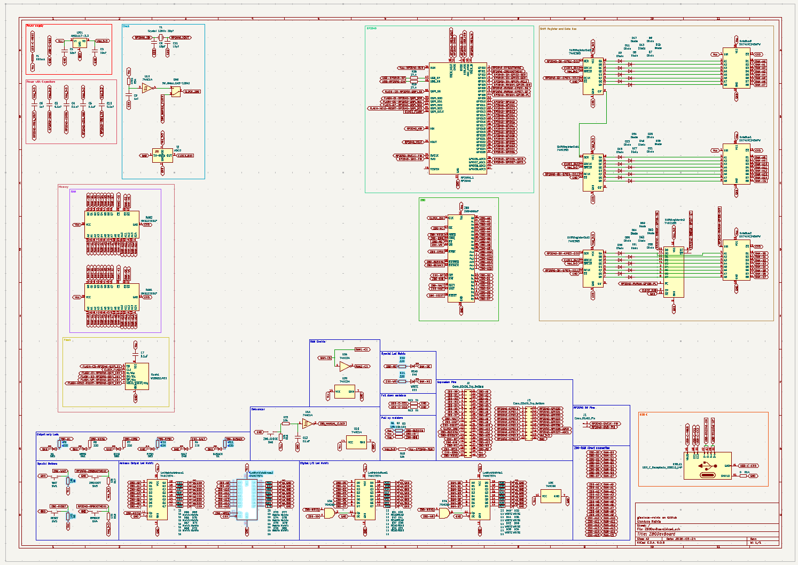
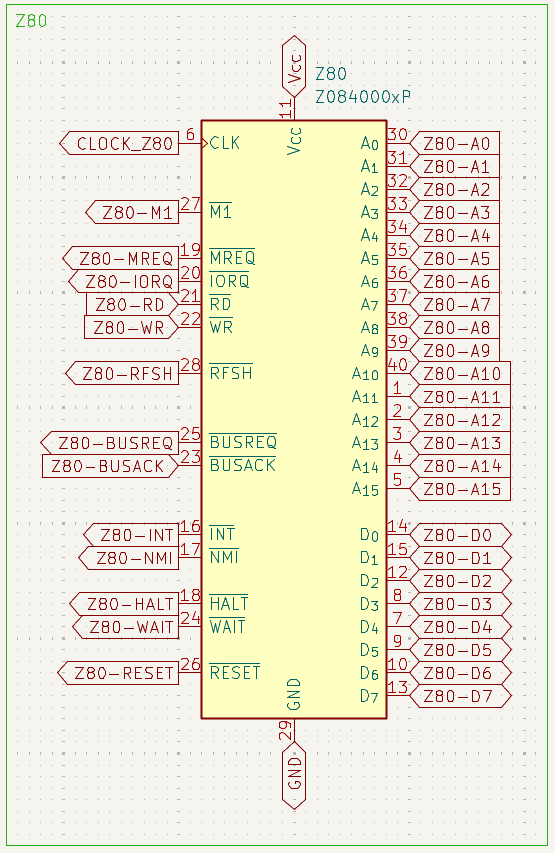
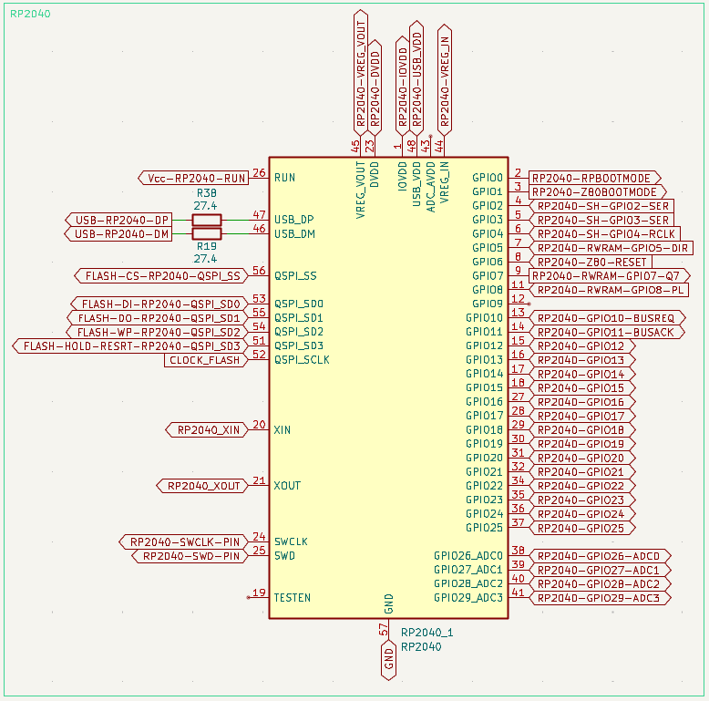
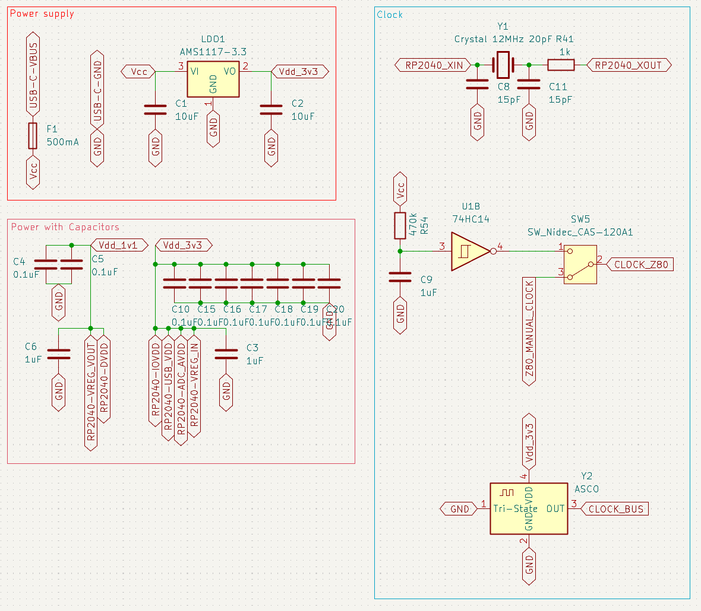
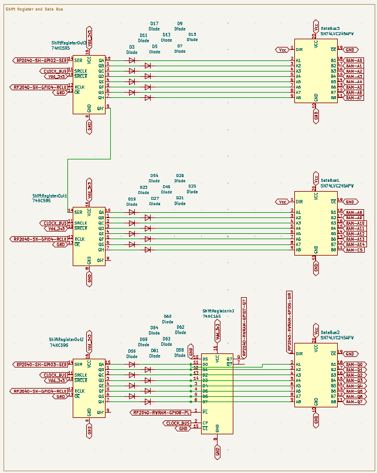
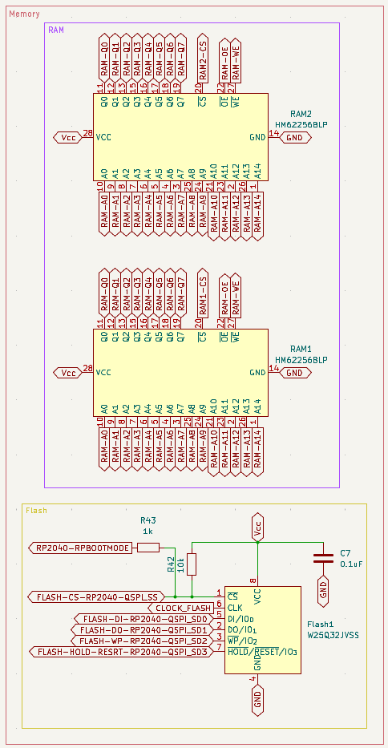
The PCB layout was designed in KiCad with attention to signal integrity, routing clarity, and ease of hand-assembly. The board uses 4 layers: F.Cu and B.Cu for general signal routing, In1.Cu for the power distribution network (5V and 3.3V), and In2.Cu as a solid ground plane.
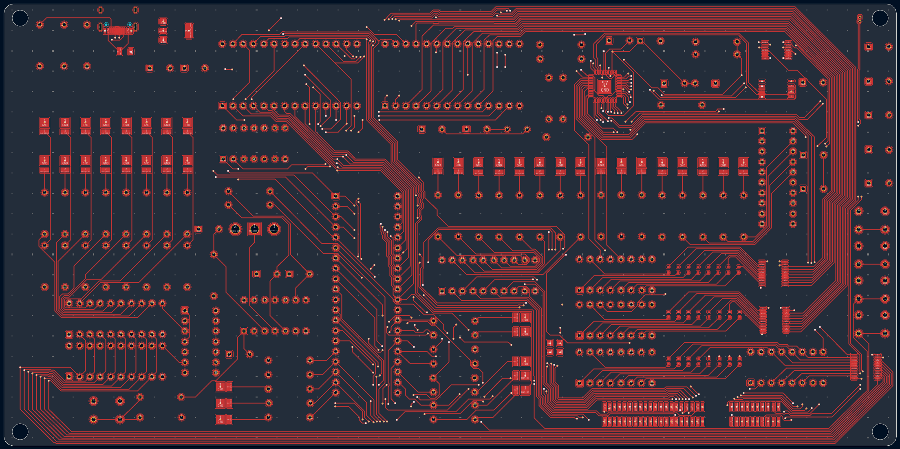
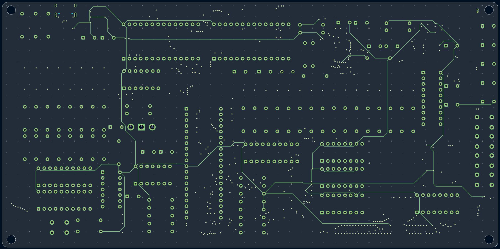
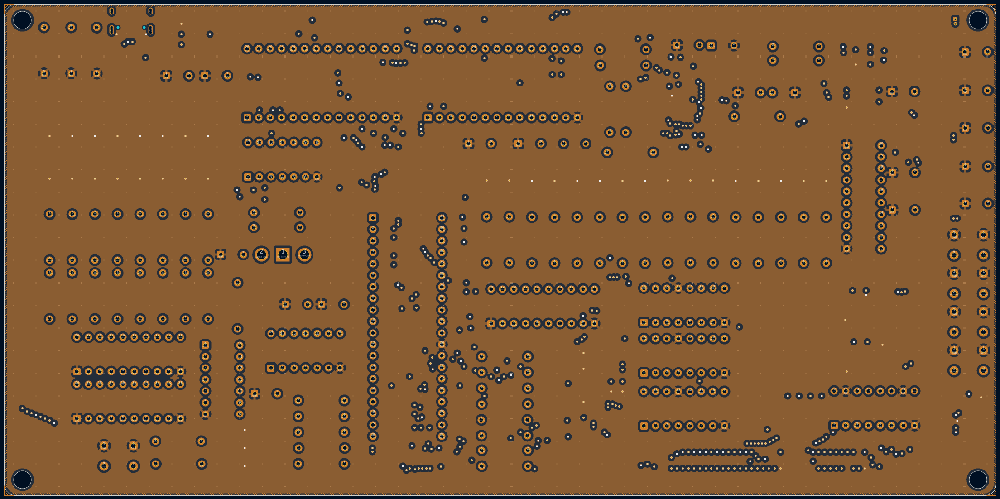
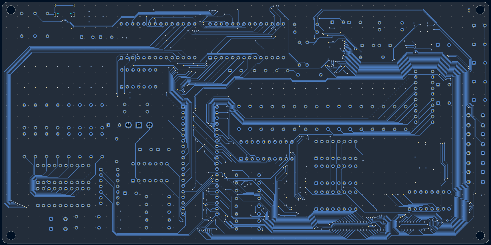
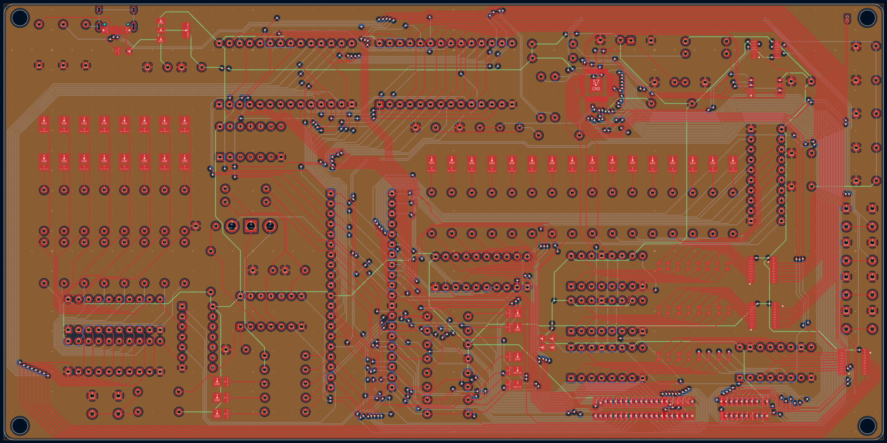
KiCad’s built-in 3D viewer was used to generate a render of the assembled board, useful for previewing component placement before manufacturing and for visualizing the board without needing a physical unit on hand.
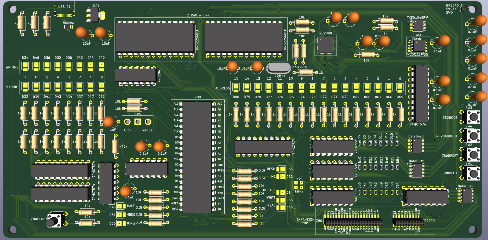
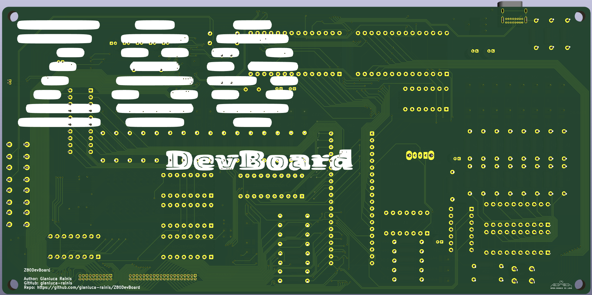
Photos of the assembled, manufactured Z80DevBoard, shown here for reference alongside the 3D render and schematics.
Assembled Z80DevBoard - top view
Assembled Z80DevBoard - bottom view
This section explains the reasoning behind some of the key hardware decisions made on the Z80DevBoard.
The CMOS variant of the Z80 was chosen specifically because it supports full static operation, meaning the clock can be slowed down to DC without losing register state. This is what makes manual clocking possible: stepping through a program one cycle at a time would simply not work with the original NMOS Z80, which requires a minimum clock frequency to function correctly.
Asynchronous SRAM was chosen for simpler, more direct memory access from both the Z80 and the RP2040. Since it doesn’t rely on a shared clock to coordinate read and write operations, both processors can access it independently, each governed by its own timing: the Z80 through its native bus protocol, and the RP2040 through the shift registers.
The RP2040 was chosen as a modern microcontroller that offers a rich set of advanced features (PIO, dual cores, ample SRAM, USB) at a low cost, making it an ideal companion processor for managing the Z80 environment without requiring custom ASICs or excessive support circuitry.
Shift registers allow the RP2040 to control the full Z80 address bus and data bus using only a handful of GPIO pins, instead of dedicating 24 pins directly to bus signals. Bus transceivers handle the voltage difference between the Z80’s 5V logic and the RP2040’s 3.3V logic, allowing the two to communicate safely.
The LED matrices let you observe the Z80’s bus activity in real time, without needing a computer, an oscilloscope, or a logic analyzer connected. This was a deliberate choice to keep the board self-contained and immediately readable.
The SWD debug interface enables advanced debugging of the RP2040 like setting breakpoints, inspecting memory and stepping through code, which becomes essential for custom firmware development.
The expansion connectors are there to support advanced projects beyond the board’s default functionality: custom I/O handling, hardware actions triggered by interrupts, or entirely new peripherals built on top of the existing platform.
USB-C is the modern standard, present on virtually every laptop and workstation today, eliminating the need for adapters or legacy cables.
If you have worked through this documentation and run your first programs on the Z80DevBoard, you have touched on a remarkable amount of fundamental computer science and electronics, knowledge that goes far beyond the Z80 itself.
The Z80 sits at the root of decades of processor design.
Understanding how it fetches instructions, manages its registers, and communicates over its buses gives you a foundation that transfers directly to modern CPU architectures: the same core concepts of instruction cycles, addressing modes, and bus protocols still underpin the processors running in today’s computers and embedded systems. Having worked with a real, observable Z80, you now have the conceptual tools to understand how any computer actually works beneath its layers of abstraction.
You have written, assembled, and executed real Z80 assembly: moving data between registers and memory, implementing sorting algorithms, handling interrupts, and controlling I/O directly through hardware ports. These are the same fundamental operations every higher-level programming language ultimately compiles down to: you have seen, firsthand, what a computer is truly doing when it runs a program.
By studying the technical documentation in depth (the schematics, the PCB layout, the design choices behind every component), you have also gained insight into how the board itself was engineered. Concepts like voltage level shifting, bus arbitration, decoupling, and layer stack-up are not just abstract electronics theory here; they are the real reasons specific components were chosen and specific traces were routed the way they were on the board in front of you.
This is what the Z80DevBoard was built for: not just to run code, but to make the invisible visible.
Watching a real address bus toggle on the LED matrices, stepping through a real clock cycle, and tracing a signal from its schematic symbol to its physical pin on the board turns abstract textbook concepts into something you can see, touch, and understand at a level that no simulator alone could fully provide.
The Z80DevBoard is a starting point, not a destination. Here are some directions worth exploring:
The Z80DevBoard is released under open licenses: the hardware under CERN OHL S v2.0, and the firmware and documentation under the MIT License.
This means: - You are free to use, study, modify, and manufacture the hardware - If you distribute modified versions of the hardware, you must release your changes under the same CERN OHL S v2.0 terms - The firmware and documentation can be freely reused, modified, and redistributed under the MIT License - Attribution to the original project is appreciated
Contributions are welcome via the GitHub repository: - Bug reports and corrections - open an issue - Hardware improvements - submit a pull request against the KiCad project - Firmware features - submit a pull request against the firmware source - Documentation additions - submit a pull request against the documentation
Repository: github.com/gianluca-rainis/Z80DevBoard
The Z80DevBoard draws on decades of publicly available documentation, open-source tooling, and community knowledge:
A special thanks goes to PCBWay, whose sponsorship made the manufacturing of this board possible in the first place. Their precision, reliability, and genuinely helpful technical staff turned a KiCad design file into a real, working board. Without them, this project would still be a set of schematics on a screen.
This documentation, and the board it describes, would not exist in this form without all of the above.